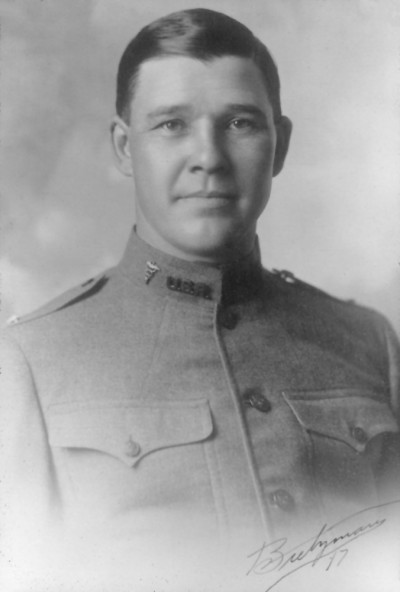

This is a guest post by Dr. Selma Calmes
Arthur Guedel, MD (1883-1956), was an early anesthesiologist who made many important contributions to the development of anesthesiology. His papers are now available at UCSF Archives and Special Collections. Who was Dr. Guedel and why is he important?
Guedel’s early life was difficult. He was born in Cambridge City, Indiana, and had to leave school at age 13 to help support his family. A work accident led to the loss of the first three fingers of his right hand—and he was right-handed. Guedel dreamed of practicing medicine even though he had no high school diploma and no financial resources. American medical schools had few admission requirements then, and his family physician helped him get into the University of Indiana Medical School. He graduated in 1908.
Guedel administered his first anesthetics while an intern at Indianapolis City Hospital. This was a common duty for interns of the time because there were then few physicians interested in anesthesia. Guedel started a general practice in Indianapolis in 1909 and earned additional income by giving anesthesia in hospitals and dental offices. He was an exceptional observer, analyzing carefully what might be going on with his anesthetized patients and thinking of possible solutions to the problems.

First version of Guedel’s signs of anesthesia
One example of his contributions is his work on the signs of anesthesia. The various devices that tell us how an anesthetized patients are doing today, such as EKGs, blood pressure devices and pulse oximeters, weren’t available when Guedel began to do anesthesia. Four stages of anesthesia were accepted:
Stage I: Induction, the start of administration until loss of consciousness
Stage II: Struggling, breath-holding, delirium, from loss of consciousness to onset of surgical anesthesia
Stage III: Surgical anesthesia, characterized by deep, regular, automatic breathing
Stage IV: Bulbar paralysis, irregular breathing, pupils no longer respond to light
Guedel’s contributions were to expand these observations and to look for other physical signs. He better defined Stage III, the level at which surgery could be done, by further dividing it into four planes and by adding eye signs. This improved patient safety by making clear when the patient was too “deep” and might possibly die from overdose of anesthesia.
Dr. Arthur Guedel during World War I
The setting for these developments was Guedel’s service with the US Army in WW I in France. The Army had no anesthesiologists when the US entered the war, and casualties were overwhelming. After working 72 hours straight along with three other physicians and one dentist, and needing to run as many as 40 operating room tables at a time, Guedel decided additional staff had to be trained. He developed a school that taught physicians, nurses and orderlies to give anesthesia. But, how could he help his trainees do safe anesthesia once they left the school? He prepared a little chart of his version of the signs and stages of ether anesthesia, the most common agent in use at the time and one with a wide margin of safety. This chart was a visual version of the concepts he had been developing before his Army service. Armed with their charts, the trainees went out to nearby hospitals to work on their own. Guedel acquired a motorcycle so he could make weekly rounds of the six hospitals for which he was responsible. He would roar from hospital to hospital through the deep mud that characterized WW I battlefields, checking on his trainees. He was known as “the motorcycle anesthetist” of WW I.
After his return to the US in 1919, he presented his chart at meetings. In 1920, he wrote an article on his signs for the first anesthesia journal. Additional articles appeared in 1935 and 1936 and also in Guedel’s notable book, Inhalation Anesthesia: A Fundamental Guide, published in 1937.

Dr. Guedel (under the operating room table) and his anesthesia machine in the Zakheim mural. Chauncey Leake is standing above him
In 1929, Dr. Guedel moved from Indianapolis to Los Angeles. He continued his careful observations and worked to solve important problems. He collaborated with others, most importantly Dr. Ralph Waters of Madison-Wisconsin (considered the father of academic anesthesiology) and pharmacologist Dr. Chauncey Leake, then UCSF’s chairman of pharmacology. Guedel would travel from Los Angeles to San Francisco for various research projects at UCSF. He even appears in the Bernard Zakheim murals at UCSF! The papers now available in the UCSF Archives document many other contributions made by this important anesthesiologist.
Selma Harrison Calmes, MD is a retired anesthesiologist interested in history. A 1965 graduate of Baylor College of Medicine, she trained in anesthesiology at the University of Pennsylvania. She came to UCLA in 1976 as their first pediatric anesthesiologist. In 1988, she became chair of anesthesiology at Olive View-UCLA Medical Center. She retired from clinical work in 2007 and now is the Anesthesiology Consultant to the Los Angeles County Coroner.
In 1980, she took a National Endowment for the Humanities Summer Fellowship in Medical History at the University of Cincinnati under noted medical historian Dr. Sol Benison. She writes on various aspects of anesthesia history, especially in California, and on the many women who were early leaders in anesthesiology, especially Dr. Virginia Apgar. She co-founded the Anesthesia History Association with Dr. Rod Calverley in 1982 and served as the first editor of their publication, now the Journal of Anesthesia History. She is on the Board of Trustees of the American Society of Anesthesiologists’ Wood Library-Museum and is president of the Guedel Memorial Anesthesia Center Board of Trustees. She appeared in the National Library of Medicine’s 2003-2005 exhibit on women in medicine, “Changing the Face of Medicine” and is listed in their biographic dictionary.


{kind=link}
{kind=link}
{kind=link}
{kind=link}
{kind=link}
{kind=link}
{kind=link}